Refiner：生成式排序中的潜在残差推理
Refiner 研究如何在已有推荐排序器之上追加少量潜在计算，把一次直接预测的候选分数逐步修正，而不要求生成自然语言推理链。论文由 Haihan Shi、Ruidong Han、Wenjie Wang 等完成，第一作者主机构为中国科学技术大学，合作机构包括美团、中国人民大学、香港理工大学及 Academy of Cyber。首版提交于2026年10月27日09:25:53 UTC，即北京时间10月27日17:25:53；本轮于10月30日北京时间核验。论文入口：arXiv:2610.36890。本轮未核验到本文独立代码入口，没有运行作者训练或线上实验。PDF带有CIKM与DOI元信息，本轮不把论文自述单独作为会议状态的独立验证。
已有生成式推荐排序主要通过一次直接预测得到候选分数。要让额外潜在推理真正服务精细排序，既要让每一步学习分数修正，又要向候选独立的推理链提供共享用户信息，同时避免为了增加推理而替换或重训成熟的线上模型。
1. 背景和问题
推荐链路中的召回与排序使用不同接口。召回从大目录中提出少量可能相关的物品，排序接收已经存在的明确候选及用户上下文，为每个候选预测点击或转化。Refiner讨论的是后一种设置：一个请求有用户画像、行为序列以及多个候选，模型同时给这些候选打分。这里的“生成式排序”沿用序列转换架构，但最终训练目标仍然可以是判别式CTR或CTCVR预测，不代表输出一定是商品语义ID，更不意味着模型要生成一段推荐理由。这一区分决定了适合迁移的推理机制，也避免把下一物品命中率与曝光日志上的预测能力混为一谈。
在本文所依赖的排序骨干中，画像特征、历史行为、候选物品特征被嵌入为连续token，再送入Transformer。候选位置能读取用户侧信息，但不同候选之间受到掩码隔离。这样可以共享同一请求的用户计算，同时并行生成多个候选表示。它既不同于传统的每个候选单独跑一遍模型，也不同于让所有候选任意交互的集合式排序。论文认为这种架构已经具备较好的工程效率，剩下的问题是：一次前向输出的分数是否已经充分利用用户历史和候选特征，还是可以用少量额外计算改善临界物品之间的排序。
这个问题与大模型的推理时计算有联系，但不能照搬文字思维链。显式推理通常让语言模型先产生解释文本，再决定推荐结果。对于以ID和结构化特征为主的线上排序器，语言输出不仅增加解码时间，也要求原模型具备可用语言能力。Refiner选择在隐藏空间做多步状态更新：每个候选获得自己的中间状态，新的Transformer计算把这些状态继续加工，然后输出连续分数修正。这里“推理”是作者对多步潜在计算的命名，论文没有证明隐藏状态对应人类可解释的思维过程，也没有提供语言解释质量实验。
第一项挑战是监督与任务对齐。只把同一个排序模型多跑几次，并不能保证后一步比前一步更好；如果每一步都从头预测完整分数，新增模块还可能重复学习基座已经掌握的结构。作者将新增预测定义为对已有分数的加性校正，并用累积预测与标签的误差训练。它让额外计算有明确职责：修补已有估计的偏差，而不是重新建立整个排序映射。这个设计与残差拟合有关，但本文是在候选的多步隐藏状态上产生校正，不能等同于直接堆叠独立树模型或把各步视为具有独立训练数据的集成成员。
第二项挑战来自候选隔离与用户信息之间的张力。每个候选需要自己的细粒度判断，例如同一个用户对不同商品品类的偏好；但完全以候选为中心更新，可能不能有效保留用户行为的全局视角。已有检索型潜在推理常重点更新用户表示，目标是找到下一个物品，不能自然处理一个请求中的多个显式候选。本文以历史查询向各候选提供一组紧凑共享用户状态，并规定这些共享状态不能从其他候选吸收信息。由此，候选推理既能利用统一用户上下文，又不需要通过其他候选间接获得影响评价公平性的额外信号。
第三项挑战是模型接入。成熟线上模型通常持续训练，参数、数据和服务实现都有既定节奏。为了加入推理结构而端到端替换全部参数，会增加训练成本，也可能改变原有直接预测行为。Refiner冻结基座嵌入、Transformer和原预测层，只训练LoRA与独立推理预测头。基座仍提供初始分数和初始隐藏状态，新增路径承担残差。参数量减少是适配策略的性质，不能据此推导整体前向时间同比下降，因为推理时依然执行主干运算，额外步骤也会增加序列长度和重复计算。
本文的工程价值还在于将这个思路落实到每日更新的推荐系统。每天可以读取新的基座检查点，将前一天Refiner参数作为热启动，再只更新新增模块，避免把基座长期冻结成一个过期模型。这样的“每轮冻结”与“永远不更新基座”并不相同：基座仍按自身生产流程演进，只是在当轮Refiner适配时不被其梯度改变。新基座隐藏空间与昨日适配参数可能存在偏移，论文给出短期线上收益，却没有证明任意长期更新都稳定，因此更新兼容性仍是后续验证重点。
对推荐研究者，最值得比较的是三个决策：以候选为单位保存潜在状态，以历史查询传递共享兴趣，以分数残差定义新增计算目标。对大模型研究者，它提供一个结构化任务的例子：推理时计算可以围绕连续分数而不围绕文字答案，也可以在冻结骨干上轻量训练。但两类读者都应保留评价边界。公开数据使用随机负采样，工业数据来自已部署系统曝光日志，线上流量属于特定平台；三者互补，却不能把一处更大的相对提升当作另一处收益预测。
另一个关键背景是候选接口决定了可比较方法的范围。论文明确指出，OnePiece的完整排序配置允许候选间交互，并需要特定业务上下文，当前生产设置缺少这些条件，因此没有将其强行放到同一主表。这个限制不是可以忽略的脚注：如果模型能看到额外候选关系或上下文，就改变了信息预算。本文对ReaRec也做了面向排序的改造，使其能同时评分多个候选并保持隔离。阅读主结果时，应判断新增残差机制是否在相同接口下有效，而不是根据方法名称就声称优于所有“推理推荐”体系。
对残差学习还有一个应先提出的疑问：初始输出已是经过BCE训练的预测，新增头却用平方误差优化连续修正，二者并非同一概率模型的分解。作者用排序和业务结果验证它的实用性，没有给出累积预测永远合法的概率约束。因而后文会把候选顺序改善与概率可信度分开，避免把一个指标上的好结果扩写成更广泛能力。
2. 方法
2.1 推理token与历史查询
输入由用户画像、行为序列与候选特征构成，基座以候选掩码前向计算，输出初始评分：
符号解释：$X_0=[E_U,E_S,E_I]$是画像、历史和候选嵌入的拼接；$M_0$为原候选掩码；$\mathcal T_0$与$\mathcal P_0$为基座Transformer和预测层；$K$为候选数；$H_0[-K:]$选取最后候选隐藏状态；$S_0$为$K\times T$个任务预测。基座采用二元交叉熵训练：
符号解释：$T$为任务数，$L_{ij}$为第$i$个候选在任务$j$的二元标签，$S_{0,ij}$为基座概率预测；归一化对候选与任务取平均。这是基座训练过程，适配时被冻结，不能与新增路径的MSE混成同一个可训练目标。
每步追加一组候选状态，第一组取基座输出，后续取上一步增强Transformer的最后候选推理位置：
符号解释：$r$为推理步，$E_{R_r}$包含每候选一个连续推理token，$H_{r-1}$为上一步隐藏状态。它不是词表采样，不需要解码成文字。共享用户信息另从基座历史段尾部抽取：
符号解释：$E_{HQ}$为最后$N_{HQ}$个历史位置的输出表示，两个下标定位切片；$X_r$保留原特征、固定历史查询和截至$r$的推理token。历史查询由已编码状态抽取，不是额外生成自然语言摘要，也不是每步重新检索日志；一次请求内各步重复使用。
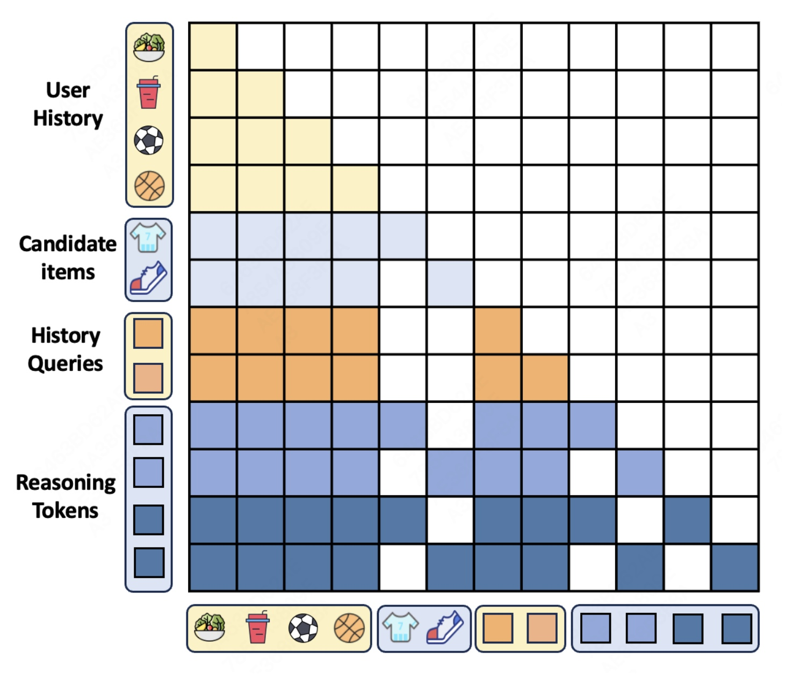
Figure 1应从行表示的查询token和列表示的被访问token交叉阅读。上方黄色历史区域维持历史自身的因果访问，两个候选行读取共享历史，却不互相读取对方候选。中间橙色历史查询能够访问用户历史，并在查询段内部保持因果关系；它们不是允许候选内容自由流回的共享池。底部蓝色推理token按候选分别扩展：同一候选后一步能看自己的前一步、对应候选及用户侧上下文，不能通过另一条候选推理链交换信息。图中的空白格具有实质作用，若实现把这些格误设可见，模型就会变成另一种集合式排序器，训练与测试时候选组成也可能影响结果。图内每候选两个推理步骤只是说明例子，主实验与线上配置使用单步，不能把画出深度当成部署深度。历史查询的“全局”指压缩较广用户信息，并非获得未来交互或额外标签。复现时应先验证历史输出本身不含候选回流，再检查新增查询段，否则即使表面禁止推理token互相交互，仍可能经共享状态间接泄漏。该图支持作者设计的可见性约束，不能单独证明服务内核已正确执行掩码；需要候选替换和置换测试核对输出独立性。图中同色深浅区分步骤，并不表示这些状态都具有相同含义，也没有把某种颜色定义为正向评分修正。正负修正是预测头学到的结果，应与掩码的可见性规则分开理解。 从信息流上看，掩码承担的并非排序去重或多样性重排功能。候选互相不可见意味着模型主要学习逐候选条件评分，而不直接建模一组物品共同展示的竞争或互补。因此它适合复用原先独立评分接口，却不能单靠这一结构解释列表级满意度的变化。
2.2 参数高效适配
预训练阶段已得到基座，新增路径保留其参数并注入LoRA：
符号解释：$\mathcal T_{\mathrm{reasoning}}$是低秩适配的Transformer计算，$M_r$为按上述规则扩展的掩码。加号表达参数适配关系，不是另建完整同规模Transformer并把输出相加。原嵌入、主干权重、原预测头不更新，LoRA与独立推理头接受梯度；直接路径仍提供原始$S_0$。
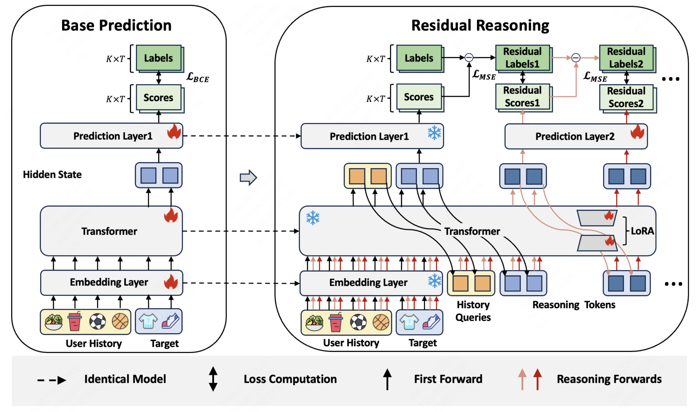
Figure 2左侧是训练成熟排序器的常规路径：用户历史与候选经嵌入层、Transformer和原预测头得到分数，以BCE对标签监督。右侧转入残差适配，雪花表示冻结，火焰表示可训练。黑色第一遍前向提供初始评分、历史查询和第一步推理状态，后续有色箭头才用带LoRA的Transformer继续加工候选。原预测头继续输出基座分数，新增预测头产生残差，图顶端把已有分数与后续修正累加，再和标签比较。图中的残差标签可理解为当前预测尚未解释的误差，但原文实现是累积分数对原标签的MSE，不能另推断独立构造了文本残差标签数据集。两步推理共享增强路径，不是每步复制完整模型；历史查询也由初次基座表示取得后反复使用。右侧强调新增参数量较小，但冻结不免除前向主干成本，每多一步仍处理扩展后的序列。它展示职责隔离，不能自动保证任何端到端训练都差于LoRA，也不能把火焰数量当作训练显存比例。论文随后以去LoRA与端到端变体作经验比较，结论只适用于那些设定。对接系统时，还需让第一遍原始预测与未挂Refiner的基座在同一输入和掩码下保持一致，避免把接入差异误算成推理增益。训练阶段能够计算标签误差，线上却只执行图中前向和分数累加，因此不能在推理时利用真实点击来生成所谓残差标签。 冻结基座还提供了误差归属的参照：同一请求的初始分数可以单独记录，再观察新增头改变哪些候选、改变多少。若只保存最终分数，就难以区分新数据让基座变好和适配器修正带来的收益。这种诊断是复现建议，论文没有给出所有请求的逐项修正分布。
2.3 残差目标与每日更新
推理头读取末尾候选推理状态，输出连续校正：
符号解释：$S_r$为第$r$步校正矩阵，$\mathcal P_{\mathrm{reasoning}}$为可训练预测头，$S_{\mathrm{cum},r}$为初始分数加所有修正。校正可以为正或负，不是每步生成独立点击概率再相加。原文没有给出累积分数始终处于零到一的约束，不能替作者补上sigmoid或截断，也不能仅凭AUC提升宣称校准改善。
符号解释：$R_{\mathrm{steps}}$为总深度，各步累积预测都接近同一二元标签，再对各步MSE求和。目标鼓励早期就有效修正，不只监督最终状态；但目标下降不保证每个样本每一步必然单调变好。训练需标签和梯度，推理只有状态递推与分数累积，不计算损失。主实验用一步，深度一至四另作敏感性实验。
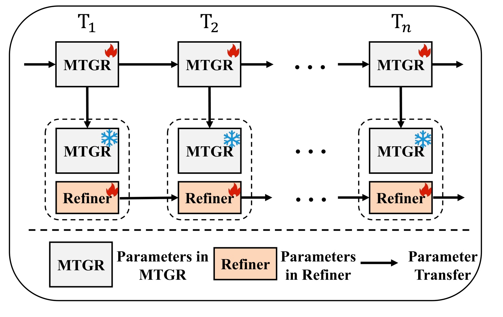
Figure 6把时间维度与请求内推理分开。上方实线是生产MTGR按自身流程更新到不同日期，下方虚线框表示当日Refiner适配：加载当日最新MTGR并冻结，把昨日Refiner附加参数迁入，利用最新数据优化。上方连续火焰与下方雪花不矛盾，基座在自身流程更新，在当轮适配中冻结。跨日期传递的是附加模块参数，不是将未来交互或昨日完整输出直接送入当前预测。原文先七天热身，随后观察七天，观察期也按此更新。该框架降低了全参数重训的接入负担，但“冻结基座”只是每轮训练中的局部状态，不能描述成底模永远不变。新基座可能改变隐藏状态尺度和方向，昨日适配参数是否仍合适，需要当日训练重新校正。图没有无限期更新稳定性的理论保证，也没有比较长期不刷新Refiner的退化。复现时，检查点版本、数据时间与参数迁移关系必须留档，否则不同日期基座与适配器错配，会产生与论文机制无关的损失。若线上需要回退，也应回到对应日期的基座直接预测，而非随意混用更早基座与当前业务特征。图中多条参数流体现的是系统集成方法，不能当作一项独立消融已经证明每日热启动优于所有其他更新策略。
每日热启动也有不同于请求级缓存的含义：参数在训练任务之间传递，不是将昨日用户状态无条件留在缓存。对应的数据合规和时序边界仍取决于原日志管道。当前图没有给出专门的版本兼容协议，因此更换嵌入字典、特征顺序或候选表示时，是否还可直接承接附加模块应另外检查，不能由简单箭头推定。
3. 实验结果
3.1 数据与实验协议
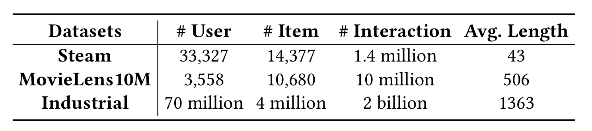
Table 1并列三个不同任务环境，不应只按交互数量判断证据强弱。Steam有33,327名用户、14,377个物品与约140万交互，平均历史长度43；MovieLens10M表列3,558名用户、10,680个物品与约一千万交互，平均长度506；工业日志约七千万用户、四百万物品、二十亿交互，平均长度1363。这些数字按论文原样记录，尤其MovieLens用户数不擅自用其他版本统计替换。公开集按时间排序，以八比一比一划分训练、验证和测试；每正交互配一个随机负物品，每次候选数二。它是构造成CTR预测的公开基准，不是完整目录下一物品Recall，也不是生产大量召回候选的分布。工业离线用一天训练及随后一天一部分测试，候选规模沿既有曝光流水线决定，没有统一成二。工业输入分长期与实时历史，平均长度不能直接等于每次推理张量长度。该表支持从短到长的环境覆盖，却没有跨数据集完全相同预处理的统一对照，公开大增益不能比例外推工业收益。决定难度的还有候选来源、负例含义和标签观测条件，比单一总量更直接。若重采负例使其更难，AUC水平与改善幅度都可能变化，必须保持同一协议。表内工业规模也不能直接当作线上观察期样本量，因为口径是训练日志，不是A/B每日曝光计数。统计规模只说明数据环境，不能证明某个模块对所有长序列或所有候选规模都保持相同表现。
作者用A100和三个随机种子，主表给均值及标准差。工业离线MTGR为三层Transformer、两个注意力头、隐藏维度512；线上十五层。公开集用更小骨干防过拟合，传统CTR模型搜索嵌入维度。LoRA秩从32、64、128选，缩放因子从64、128、256选，历史查询数零至十六。公开小模型、工业离线三层与线上十五层不是相同预算的一条曲线。GAUC按用户级AUC平均，强调用户内部排序，与所有曝光混算AUC互补。
3.2 公开数据主结果
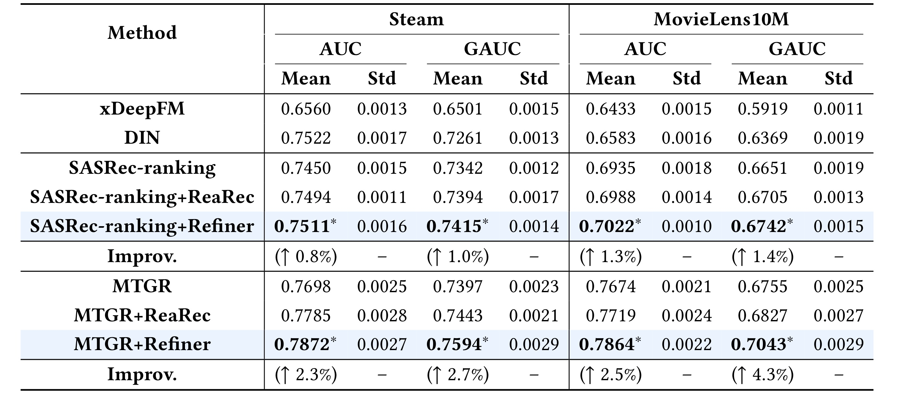
Table 2横向先分Steam与MovieLens10M，再分AUC、GAUC，每项列均值和标准差。纵向为传统CTR、SASRec-ranking及两个推理扩展、MTGR及其扩展。Steam的MTGR AUC由0.7698到Refiner的0.7872，GAUC由0.7397到0.7594；相对直接基座约2.26%和2.66%。对照MTGR加ReaRec为0.7785、0.7443，Refiner也更高，但底行2.3%与2.7%分母为直接MTGR，不是最强ReaRec。若相对ReaRec算Steam AUC，绝对差0.0087、相对约1.12%，不能混分母。MovieLens10M的MTGR AUC从0.7674到0.7864，GAUC从0.6755到0.7043，显示用户内排序改善。另一方面，SASRec-ranking加Refiner在Steam AUC为0.7511，仍稍低于DIN的0.7522，不能宣称每骨干都胜所有传统模型。星号是作者报告对最佳基线显著，本轮未复跑统计，三种子也未覆盖时间漂移。最有力结论是，固定任务和骨干时，新增适配优于直接预测，并高于当前改造ReaRec，而非潜在推理全面取代传统排序。标准差提醒比较必须基于相同随机重复，不能取某模型最好种子对另一平均。传统模型未列残差扩展，因此没有回答给它们添加类似适配会怎样。公开正负比例由抽样构造，即使AUC更高，输出也不能直接拿去做真实广告成本估算；部署价值还需校准、困难候选和时间外测试。两骨干改善方向一致，有助于说明不是只适配一个主干，但它们仍都是可提供候选位置状态的架构。
该比较还同时改变了骨干能力和推理适配，因而应先在一个骨干内部比较，再观察是否跨骨干复现方向。MTGR本身相较部分传统模型已有明显优势，不能将这个差距全归给Refiner。表中公开结果没有展示增加相同参数但不递推的容量控制，也没有给相同延迟下更宽一次预测模型，故仍未排除某些预算配置下其他扩容方案更划算。这些缺口不否认当前对照的改善，而是限定其回答的问题范围。
3.3 工业离线的小幅增益
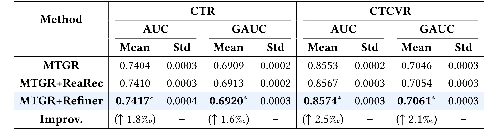
Table 3须逐任务看，CTR和CTCVR的AUC、GAUC均给三方法均值和标准差。MTGR的CTR AUC为0.7404，ReaRec为0.7410，Refiner为0.7417；CTR GAUC依次0.6909、0.6913、0.6920。CTCVR AUC从0.8553到0.8574，GAUC从0.7046到0.7061。最易误读的是底行单位：1.8、1.6、2.5、2.1后是千分号，表示相对基座变化。例如CTR AUC绝对增0.0013，除以0.7404约1.76‰，不是增加1.8个百分点，也不是绝对AUC增0.018。相较ReaRec的额外优势更小，但四列方向一致。作者说明CTR GAUC配对检验$p=0.008$，认为强工业模型上千分之一量级相对收益有业务意义。该统计只适用于作者协议，不能证明每用户组受益，也不能代替线上随机化。曝光由已有系统产生，验证既定候选流水线中的预测改进，无法直接观察未曝光物品的反事实反应。因此小增益应连同候选来源与强基座理解，不能因公开涨幅大认为工业不足，也不能将显著性视为任意场景保证。两个任务共享骨干，四列正向不等于四次独立试验。这里没有校准误差，连续校正在排序上有效，不代表已解决多任务概率一致性。实际验收还要看绝对分数分布和不同用户的预测偏差，不能只把一个显著性数值作为模型上线的充分条件。表中三次随机重复的标准差也没有替代跨日期检验。
这里工业离线主实验固定单步，因此多步状态理论上能表达的更深交互并不是这些数值的直接来源。更合理的解释是一次候选状态再加工与残差监督已经产生可测差异。若要进一步验证推理深度贡献，必须回到相同工业日志、相同基座测试多步，不可将Steam深度敏感性曲线当作工业已测结果。工业候选受上游策略影响，也应在策略变化后重验，否则统计显著的小差异可能不再稳定。
3.4 组件消融
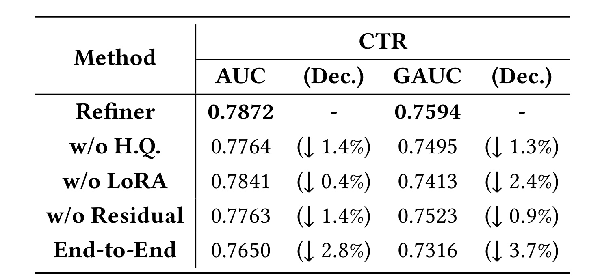
Table 4以Steam完整Refiner为参照，AUC和GAUC为0.7872、0.7594。去历史查询降至0.7764与0.7495，说明紧凑共享用户信息有用，却未证明所有摘要都优于直接读历史。去LoRA后AUC为0.7841、GAUC为0.7413，用户内部排序损失更明显，说明只训练额外头不能获得完整收益。去残差不是删所有新增计算，而是各步改用BCE直接预测完整分数，得到0.7763、0.7523，更有针对性支持累积校正。端到端变体同时优化基座与推理，不用额外LoRA及推理头，得到0.7650、0.7316，为表内最弱。它同时改变更新范围和模块分工，不是只打开冻结开关的完全同构实验，不能概括所有全参数微调都差于LoRA。底行下降以完整Refiner为分母，不能和Table 2相对基座提升相加减。各消融差也不是可加独立贡献，因为查询、LoRA和残差互相依赖。稳妥结论是完整组合在当前训练及超参数设置最佳，每种测试替换都有损失，单次消融不能排出跨任务通用重要性。去LoRA在AUC下降较小但GAUC下降较大，提示单一平均指标会遗漏用户内排序代价；这可以作为后续切片线索，却不是已定位某类用户的因果机制。表中没有列每变体相同训练资源下的收敛曲线，因而参数效率与质量关系也不应仅由最终均值反推。
消融的另一个信息是，端到端变体甚至低于相同公开数据上的直接MTGR均值，说明改变监督和参数更新方式有可能损害成熟基座。本文用冻结机制减少这种风险，却没有证明冻结会数学上保持所有新增路径行为不变；累积分数仍会受到附加头影响。实用验收应同时保留基座回退和新增模型的异常分数监控，这属于依据架构提出的工程建议。
3.5 查询数与推理深度的预算
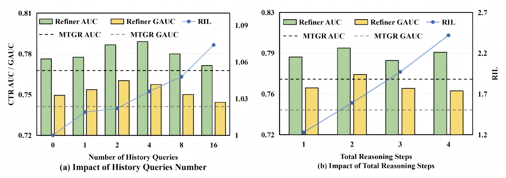
Figure 3左半改变历史查询数，固定单步推理；柱形是AUC、GAUC，折线为相对推理延迟RIL，虚线为直接MTGR的质量。中等查询数，例如二或四个，在此Steam设置较好，更多查询没有持续增益。左图RIL分母为零历史查询但仍有一步推理的配置，因此小于1.1只说明额外查询相对该推理配置的开销不足一成，不能说整个Refiner相对MTGR只慢不到一成。右半改变总步数，从一步到四步，RIL分母才是MTGR一次直接预测，使用另一套基准。更多步骤使延迟增加，但AUC、GAUC并非单调提高，二步较优，三步回落，四步也未持续超越。两图支持少量查询和推理，不是计算越多越好。原文明确RIL来自当前实现，额外路径未专门做服务优化，不能视为与成熟生产排序器的完整端到端成本比较。图未拆分缓存、长度、候选数与批量作用，也没给请求级自适应停止。应重测目标规模和并发下的延迟分位数，再判断质量是否覆盖成本。左图的质量与右图不能按横轴位置直接对齐，前者固定步数而改变用户信息容量，后者改变递推计算，两种额外预算不是可互换旋钮。对公开候选数二的小设置测得的最优查询数，也不构成生产候选数较大时的固定推荐值。
对延迟曲线还应注意，主实验候选数与真实服务中的候选数可能差距很大。每步为每候选新增一个状态，历史和候选共同决定扩展长度，因此查询与步数开销会随请求结构改变。图提供当前配置的经验关系，没有给所有候选规模下的上界。将折线读取为一个可跨业务复用的固定成本系数，会超出作者证据。
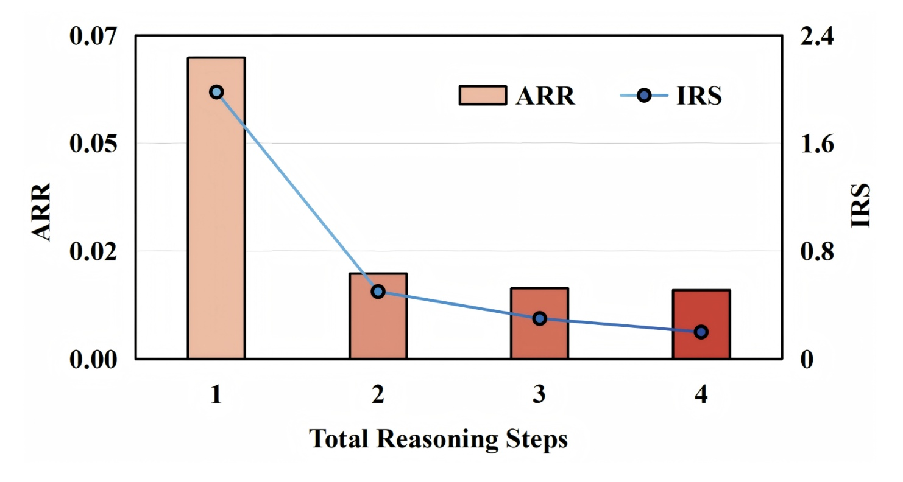
Figure 5在四步模型中画出两种趋势。柱形ARR是各步绝对残差分数相对初始分数绝对值的平均比例，折线IRS是相对前一步的性能增益。左右轴单位不同，不能将柱高和线高当同一个量比较。第一步校正较大，后几步缩小，边际性能收益也迅速下降，与少数步骤已修补多数误差的解释一致。它没有证明后续只学噪声，也没有证明所有样本一步最好；平均幅度缩小仍可包含正向和负向修正，并掩盖少数需要较深计算的困难候选。ARR用绝对值，因此不能推断模型普遍上调或下调预测。初始分数近零时比例还可能受分母处理影响，原文未详细给出零分母稳定化，本轮不补造细节。残差变小也不等于校准改善，因为累积输出无明确概率范围保证。工程上应以边际收益选择深度，不是多步架构必须用满。未来可按候选不确定性分配计算，但当前方案固定深度，这仍是作者后续方向。图中第一步IRS较大，不能同Table 2相对某个基线的总增益直接相加，因为这里是在同一四步设置内部比较前后状态，不等于另一独立训练的一步模型。若想证明自适应停止有效，必须另定义可在线获得的停止信号和误停代价，而非事后用标签选最佳步数。
若用残差幅度设计停止信号，还需处理大小与排序价值并不一致：很小修正可能改变两个接近候选的顺序，而较大修正也可能不改变最终展示。图没有把每步评分差与最终列表变化逐项对应，所以仅凭幅度阈值停止是否保留业务收益，需要另做受控试验。
3.6 用户与物品分组
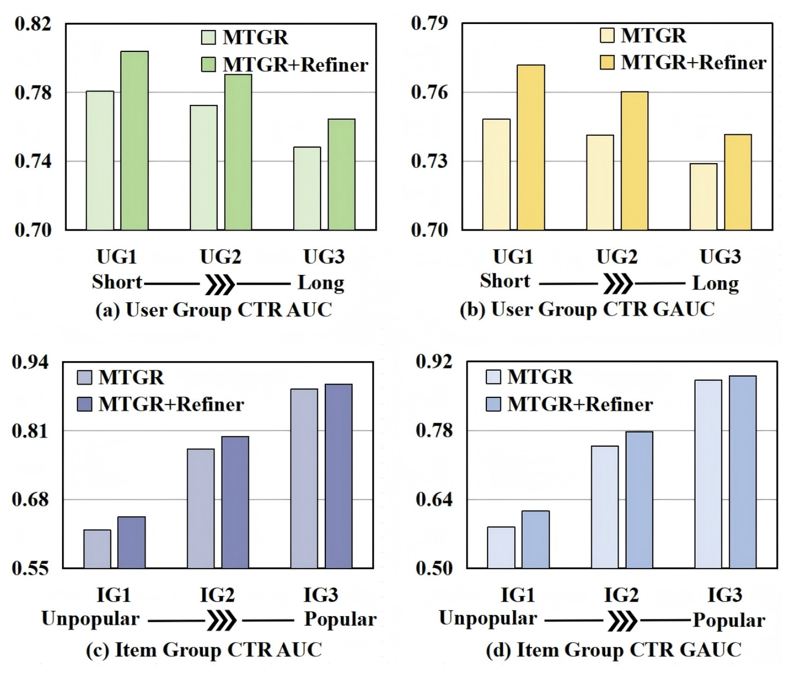
Figure 4上排按行为长度分三个等规模用户组，UG越大历史越长；下排按物品交互频率分组，IG越大越热门，各物品组按样本量平衡。两列是CTR AUC与GAUC，截断纵轴让差异更显眼，不能将柱高比例读成几倍质量。MTGR在长历史组较弱，Refiner在三个用户组都改善，没有只依赖短序列容易样本。低热度物品的基座表现更低，新增计算相对收益更突出，符合表示不可靠处更有修正空间的假说。然而低热度不等于零交互冷启动，图没有构造从未见物品的独立测试，不能写成解决新物品冷启动。作者认为长历史可能包含复杂行为和更多长尾物品，但未因果分离两者，不能全归因于长度。各组改善也不代表每个用户个体提高，此分析只在Steam完成，没有相同切面的工业线上结果。应记录分组阈值、样本权重、每用户有效标签数，防止GAUC有效用户不同造成误读。该图补充平均主结果的异质性检查，仍不足以替代生产长尾和极端序列验证。用户组三等分与物品组按样本平衡是两种分组口径，不能把两个方向相同编号看成同一群体，也不能据图判断长历史用户是否恰好购买低热度物品。若要确认交叉群体是否受益，还需二维切片以及足够样本，论文没有提供这项结果。
低热度组的改善也不能证明模型学到了物品语义，因为本文输入主要是ID和类别等离散特征，未增加内容编码器。更可能的解释需要结合用户上下文与已有物品表示，而不是将冷门物品改善自动归为内容理解。论文没有为这一机制提供独立因果分解。
3.7 线上更新与业务结果
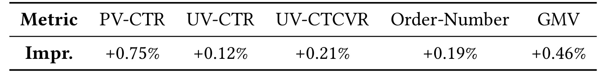
Table 5列五个业务指标：相对生产MTGR，PV-CTR提高0.75%，UV-CTR提高0.12%，UV-CTCVR提高0.21%，订单数提高0.19%，GMV提高0.46%。这些是相对百分比，不是CTR绝对增加0.75个百分点；表未公开控制组原始CTR，不能反推出概率差。实验用百分之一生产流量桶、每天数百万曝光，以十五层MTGR为控制，Refiner因延迟限制只用一步推理。先热身七天，再观察随后七天，期间随MTGR每日更新，不是固定检查点测试十四天。该表证明当前平台、候选流水线与更新机制的完整配置有正向业务变化，不能逐项归因于某个组件，线上没有分别关闭查询、LoRA和残差的全因子实验。离线三种子显著性标记不自动属于线上表；本表未给各指标置信区间、原始方差和随机化细节，本轮不额外声称五项都独立复核显著。业务数值虽小，但在已部署强模型之上，是不同于公开随机负例AUC的证据。迁移仍须测资源、延迟、用户组与更新稳定性，不能将该比例直接写成新平台预期。PV和UV指标的分母也不同，0.75与0.12之间差异不应简单解释成用户满意度变化，既可能与曝光频次有关，也可能涉及流量结构，而论文没有进一步拆解这种来源。该表也没有提供新增服务延迟或资源开销的具体测量值。
订单数与GMV是窗口内总体业务量，CTR则是比率，两者受推荐曝光、购买链路及客单价等因素共同影响。表没有报告这些中间量的完整分解，因而不能从GMV增长倒推每次点击价值必然提高，也不能把订单增长与转化率简单相乘重建GMV。作者提供正向结果，读者仍需保留业务指标之间的不同分母和量纲。
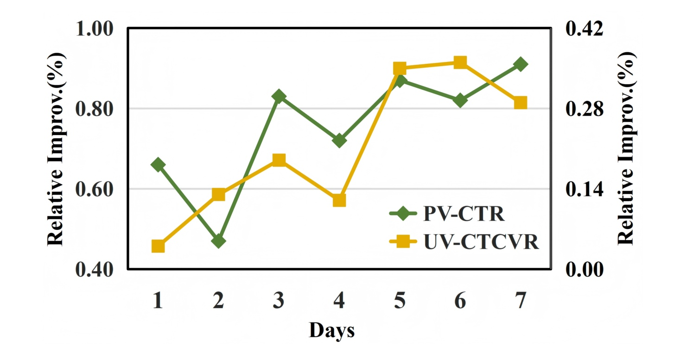
Figure 7展开七天均值，绿色PV-CTR用左轴，黄色UV-CTCVR用右轴。两轴范围不同，曲线交叉不表示两指标当天增益相同，更不能据位置决定哪个业务指标更好。七天两曲线都为正，说明整体变化不是全由一个正向异常日驱动。PV-CTR前两天回落，随后上升并波动；UV-CTCVR中间也起伏，后半段较高。图无误差带，也无控制组每日原始值，支持的是短窗口方向一致，不能证明长期单调改善或未来持续增长。Refiner每日继承昨日参数并配当日MTGR，曲线同时经历流量和检查点变化，检验动态更新流程这一周的表现，不是静态模型对所有环境稳健。进一步理解增益应记录每日基座版本、训练窗口、候选分布和用户切片，避免将底模更新或促销事件当成推理独有能力。七天也不足以评估长期反馈、兴趣多样性、覆盖和新鲜度。该图使平均值更可解释，但没消除试验设计与长期外推不确定性。图上只展示两个指标的每日变化，不能假定订单数和GMV也每天保持同方向；这些指标只在Table 5报告窗口总体结果。对业务应用，应同时预先约定主要指标与护栏指标，再判断短期正向是否值得扩流，而不是看完曲线后选择最漂亮的一项。
同样，七个日期连续为正不是七次独立随机重复，因为它们共享生产模型、流量桶和持续训练过程。将每日点当成独立样本来重新计算显著性并不成立。要给长期稳健性更强证据，仍需要更长观察、跨时间复验或正式的时间依赖统计设计，而不是只增加折线上的点数。
4. 总结
Refiner最清楚的贡献，是把新增潜在计算定义为候选分数残差，不要求结构化排序器先获得语言推理能力。候选独立掩码维持评分接口，历史查询提供紧凑用户状态，冻结基座加LoRA减少接入时改变原模型的范围。公开、工业离线和线上在各自协议下方向一致，支持继续复现；同时，追加更多步骤没有稳定收益，计算工作点与任务接口不能忽略。
我的判断：对于已具备多候选Transformer的系统，这是职责明确的适配路径：基座学习主要关系，新模块修正剩余误差，日更新配对二者版本。实际价值不只AUC，还包括保留直接预测回退和测清额外成本。连续残差与MSE使目标直观，却没有充分报告概率校准、广告价格或多目标融合影响。若下游需要可信CTR值，不能只看排序，应另验分桶校准误差与极端输出。
局限至少五项。第一，公开正例只配一个随机负例，和生产召回困难候选不同，公开收益不能直接外推。第二，线上仅一个平台、百分之一流量与七天观察，缺长期反馈和细分用户验证。第三，OnePiece需要的候选交互及业务上下文当前不可得，缺完全相同接口的对照，不能给所有潜在推理排绝对优劣。第四，RIL未专门优化，冻结也不省前向，没有通用生产成本保证。第五，固定深度没有辨认样本难度，累积输出无明确概率范围约束，长期检查点漂移也未被短期曲线充分覆盖。
后续可依次做三类实验。首先固定基座和输入，置换、替换无关候选，验证其他候选评分不受非法通路影响；历史查询不能带未来或候选回流。其次在同一日志、候选与参数预算下比较直接预测、逐步BCE、残差MSE及LoRA开关，同时测AUC、GAUC、校准、训练资源，避免只对弱基线。再次联合改变查询数与推理步数，在真实候选规模、并发和缓存配置下测延迟分位数，让质量和成本共同设门槛。通过后再做小流量随机试验，记录每日版本配对、长短历史、物品热度与回退行为。
对大模型研究，可以探索按剩余修正或不确定性停止，但这是未完成方向，不能把Figure 5平均下降直接当可部署规则。对推荐研究，更应追问新增计算修正哪类错误，以及同样资源是否更适合改基座数据。额外参数小不等于前向免费，短期业务正向也不等于长期用户体验改善。只有信息预算、候选接口、服务预算同时固定，才能判断潜在残差是否适合目标系统。若概率范围问题影响下游，后续还应明确输出变换或校准步骤，再重新验证收益；这种改造属于新的实验，不能悄悄添加后声称已复现原论文。检查点配对失败和掩码实现错误应有独立诊断，避免把接入故障误判为理论方法无效。
进一步复现时，负结果同样值得保存。如果某个业务切片没有增益，应先检查候选隔离、版本配对和样本构造是否一致，再判断目标任务是否缺少可修正的剩余误差。若基座已经很好地建模相同信号，新增计算可能只增加成本。论文没有承诺所有场景都需要潜在推理，因此应允许在明确预算和质量门槛下选择直接预测。对日更新系统，也要为基座升级和适配器升级分别保留可追溯记录，才能定位收益与回归的来源。